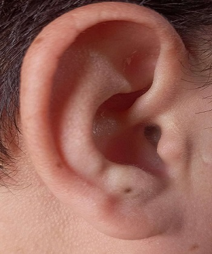

Scientists: We Found A Way To Mute Tinnitus (Ear Ringing) Watch Video
A dedicated medical librarian with over 30 years of experience that uncovered the real root cause of tinnitus and how it affects the brain. After watching this video, you'll soon be able to shut off that cringing sound that's been ruining your life and feel completely normal again.
Watch Now